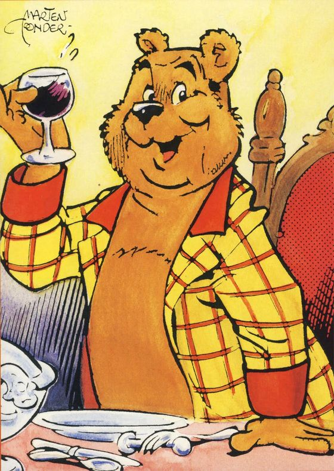

Marten Toonder: schrijver en tekenaar van Bommel en Tom Poes
Marten Toonder (1912-2005) neemt in de galerij van de Nederlandse literatoren een unieke plaats in, omdat hij een geheel nieuw genre van literatuur heeft gecreëerd.De combinatie van tekst en afbeeldingen die zijn Bommelverhalen kenmerkt, plaatst Toonders werk in het stripgenre; zijn virtuoze taalgebruik verleent het literaire kwaliteit. Begonnen in de oorlog als krantenstrip voor kinderen, won de reeks door de jaren aan diepgang. Met de uitgave van de verhalen in paperbackvorm, door de Bezige Bij begonnen in 1967, kwam de literaire erkenning. Met de opname van Toonder in ‘het pantheon’, de eregalerij van de honderd grootste Nederlandse literatoren ooit in het Letterkundig Museum, heeft hij zich definitief een plaats veroverd tussen de allergrootste schrijvers van Nederland. De eerste Tom Poes-strip, ‘Avonturen van Tom Poes’, verschijnt vanaf 16 maart 1941 in het dagblad De Telegraaf/Nieuws van de Dag. In de oorlog stokt de aanvoer van krantenstrips uit het buitenland, waardoor Marten Toonder de kans krijgt om een strip in de Telegraaf gepubliceerd te krijgen. De hoofdredacteur kiest uit een stapeltje tekeningen die van een wollige kater, en geeft Toonder de opdracht daar een strip van te maken. Wel moet hij nog een geschikte naam verzinnen. Toonders vrouw Phiny, die net van de bakker terugkomt, suggereert Tom Poes.
Toonder realiseert zich al spoedig dat de dappere en slimme Tom Poes alleen een reeks verhalen niet kan trekken; hij heeft een tegenspeler nodig. En zo stapt al in het derde avontuur, ‘Tom Poes in de tovertuin’, heer Olivier B. Bommel de verhalen binnen. Hij vormt de tegenpool van Tom Poes, en groeit na verloop van tijd uit tot de hoofdpersoon, omdat zijn vele zwakheden hem als personage meer diepgang geven. De reeks dagstrips wordt daarom ook wel aangeduid met de naam ‘Bommelsaga’.
In de loop van de verhalen zal steeds duidelijker worden dat Tom Poes en heer Bommel samen yin en yang zijn, elkaar geheel aanvullen; Tom Poes is strikt rationeel en bescheiden, heer Bommel is impulsief, emotioneel, soms vrij egocentrisch en verwaand.
Tom Poes is vanaf het begin razend populair; een half jaar na zijn krantendebuut is de eerste boekuitgave een bestseller met 20.000 verkochte exemplaren in slechts twee weken.
De avonturen van Tom Poes verschijnen zowel als tekststrip, met de tekst onder de plaatjes (gepubliceerd in diverse dagbladen, eerst in De Telegraaf, na de oorlog gedurende meer dan vier decennia in NRC Handelsblad en de Volkskrant, en in vele regionale dagbladen) en als ballonstrip (in onder andere Ons Vrije Nederland, Donald Duck en Revue).
De dagstrip heeft een trouwe en steeds groter wordende groep lezers, en zal 45 jaar lang vrijwel onafgebroken doorlopen. Als de strip wordt afgesloten met ‘het Einde van Eindeloos’ in 1986, zijn er 11.768 afleveringen, verschenen in 177 verhalen.
De verschillende personages hebben allemaal hun eigen, vaststaande rol, van waaruit ze op voorspelbare manier op situaties reageren: de ambtenaar Dorknoper, voor wie regels voor alles gaan, de ‘onsterfelijke’ kunstenaar Terpen Tijn, de door zijn eigen denken verblinde professor Prlwytzkofski, de verwaande buurman van heer Bommel markies de Canteclaer, de ruwe zeebonk Wal Rus, enzovoort.
De lezer raakt steeds meer vertrouwd met de wereld van heer Bommel en Tom Poes: het Donkere Bomen Bos, de Zwarte Bergen, het knusse stadje Rommeldam.
Wat de verhalenreeks vooral populair heeft gemaakt is Toonders zeer persoonlijke taalgebruik, dat wordt gekenmerkt door understatement, anachronistisch woordgebruik en humor. Taalvondsten van Toonder vinden hun weg naar het alledaagse Nederlands; minkukel, denkraam, zielknijper, om er een paar te noemen. Al in 1954 wordt Toonder opgenomen als lid van de Maatschappij der Nederlandse Letterkunde waarmee hij als literator wordt erkend.
Gerard Reve vond Bommel ‘grote literatuur’, en Jan Wolkers prees Toonders satire, die nooit drammerig was.
De tijdloze thematiek, Toonders virtuoze taakgebruik en humor hebben de Bommelverhalen geliefd gemaakt bij een groot publiek. Sla een Bommelpocket open in een café, en de kans is groot dat iemand opmerkt: ‘Ah, Heer Bommel hè, ik heb ze allemaal gelezen’…
Bron: https://toondercompagnie.nl/marten-toonder
Ollie Bommel

Heer Bommel gedraagt zich in de strip voornamelijk als een antiheld en een flat character. Hij is over het algemeen dom, ijdel, onzeker, naïef, onpraktisch, laf (terwijl hij zelf juist zo graag prat gaat op zijn vermeende dapperheid), onnadenkend, kortzichtig, impulsief, kleinzielig, koppig, betweterig en onvoorzichtig in zijn oordelen, maar ook volstrekt eerlijk en goed. Ook heeft hij erg veel zelfmedelijden. Met zijn ondoordachte en onbesuisde acties veroorzaakt hij vaak problemen, die dan meestal door zijn vriend Tom Poes worden opgelost. Bommels verzuchting "Tom Poes, verzin een list" is een gevleugelde uitdrukking geworden. Door zijn kortzichtigheid en zelfoverschatting heeft hij dit niet altijd in de gaten en hij gunt Tom Poes dan ook zelden de eer die laatstgenoemde toekomt. Vaak (en met name in de ballonstrips) geeft Heer Bommel de schuld van de moeilijkheden die hij zelf heeft veroorzaakt juist aan Tom Poes. Als Tom Poes de situatie dan heeft weten te redden, doet Heer Bommel vaak alsof hijzelf degene is die het heeft opgelost. Anderzijds heeft heer Bommel het hart moreel gezien volledig op de goede plek. Hij is bereid om altijd te hulp te schieten waar nodig. Niet zelden wordt hij door zijn barmhartigheid tot grootse daden aangezet.
Bron: Wikepedia
Tom Poes
 Samen beleven Tom Poes en Heer Bommel allerlei avonturen. Tom Poes is daarbij meestal degene die onder alle omstandigheden zijn verstand weet te blijven gebruiken. Hij weet meestal de juiste oplossing voor een problematische situatie en probeert de ijdele en impulsieve Heer Bommel te behoeden voor al te grote onhandigheden.
Tom Poes woont tijdens al zijn avonturen aan de Zandweg, vlak bij het kasteel Bommelstein aan de Distellaan, waar hij regelmatig op bezoek is. Tom Poes is een personage met een sceptische houding. Hij zegt regelmatig "Hm" om aan te geven dat hij iets bedenkelijk vindt.Tom Poes is het enige personage in de reeks zonder kleding.
Samen beleven Tom Poes en Heer Bommel allerlei avonturen. Tom Poes is daarbij meestal degene die onder alle omstandigheden zijn verstand weet te blijven gebruiken. Hij weet meestal de juiste oplossing voor een problematische situatie en probeert de ijdele en impulsieve Heer Bommel te behoeden voor al te grote onhandigheden.
Tom Poes woont tijdens al zijn avonturen aan de Zandweg, vlak bij het kasteel Bommelstein aan de Distellaan, waar hij regelmatig op bezoek is. Tom Poes is een personage met een sceptische houding. Hij zegt regelmatig "Hm" om aan te geven dat hij iets bedenkelijk vindt.Tom Poes is het enige personage in de reeks zonder kleding.
Bron: Wikepdia
Joost
 De trouw van Joost is bijna spreekwoordelijk, maar hij werkt wel graag voor een 'heer van stand', zoals Heer Bommel zich graag profileert. Als Heer Bommel in een aantal verhalen door omstandigheden van zijn voetstuk valt of de vreemdste capriolen uithaalt, is het voor Joost niet meer van waarde om zijn diensten nog langer aan te bieden, maar hij komt daar uiteindelijk altijd op terug. Ook behandelt Joost, ondanks zijn doorgaans onderdanige houding, van zijn kant zijn broodheer een enkele keer vanuit de hoogte, vooral wanneer de salarisbetaling of de later verworven wekelijkse vrije middag in het geding komt.
Joosts kookkunsten staan niet ter discussie. Zelfs een 'eenvoudige doch voedzame maaltijd' is doorgaans tafelvullend en besluit dan ook enkele tientallen verhalen.In de meeste verhalen uit de reeks speelt Joost een bijrol, of hij verschijnt alleen helemaal aan het eind kort in beeld.
De trouw van Joost is bijna spreekwoordelijk, maar hij werkt wel graag voor een 'heer van stand', zoals Heer Bommel zich graag profileert. Als Heer Bommel in een aantal verhalen door omstandigheden van zijn voetstuk valt of de vreemdste capriolen uithaalt, is het voor Joost niet meer van waarde om zijn diensten nog langer aan te bieden, maar hij komt daar uiteindelijk altijd op terug. Ook behandelt Joost, ondanks zijn doorgaans onderdanige houding, van zijn kant zijn broodheer een enkele keer vanuit de hoogte, vooral wanneer de salarisbetaling of de later verworven wekelijkse vrije middag in het geding komt.
Joosts kookkunsten staan niet ter discussie. Zelfs een 'eenvoudige doch voedzame maaltijd' is doorgaans tafelvullend en besluit dan ook enkele tientallen verhalen.In de meeste verhalen uit de reeks speelt Joost een bijrol, of hij verschijnt alleen helemaal aan het eind kort in beeld.
Bron: Wikepedia
Anne Marie Doddel
 Anne Marie Doddel (ook wel Annemarie Doddel, roepnaam Doddeltje) is een stripfiguur uit de Nederlandse stripreeks de Bommelsaga, geschreven en getekend door Marten Toonder. Ze is een klein vrouwtje en de vriendin van heer Bommel. Doddeltje debuteerde in het verhaal De kiekvogel uit 1958. De eerste woorden die zij tegen heer Bommel zei, zijn: "Arme stakker, heb je je pijn gedaan? Ben je erg nat? O, wat erg is dat nou allemaal." Deze woorden typeren het karakter van Doddeltje: behulpzaam en zorgzaam. Daar waar Rommeldam uitsluitend mannelijke hoofdfiguren kende, werd in dat verhaal Doddeltje als eerste (en naar later bleek enige) vrouwelijke hoofdfiguur geïntroduceerd. Zij figureert al van af het begin als de romantische tegenspeelster van heer Bommel, op wie zij heimelijk verliefd is.
Doddeltje woont ongeveer een kilometer van Bommelstein en het is voor heer Ollie dan ook een kleine wandeling naar het huisje van zijn buurvrouw, waar hij bijna altijd troost kan vinden, vaak onder het genot van een kopje thee of een maaltijd van ouderwetse Hollandse kost. Hij noemt haar een "hoogstaande dame" en spreekt haar aan met "mevrouw", waarop zij doorgaans antwoordt met "Zeg toch Doddeltje, mallerd." Haar vertrouwen en bewondering in heer Ollie is bijna altijd zeer groot wat zij uit met uitspraken als "Wat ben je toch knap, Ollie" en "Jij kan toch ook alles", maar wanneer heer Ollie weer eens ongelukkig terechtkomt is ze altijd bereid om de zorgende hand toe te steken: "Arme Ollie, heb je je pijn gedaan?". Tom Poes vindt ze maar een rare en ze hekelt regelmatig diens wantrouwen in de capaciteiten van heer Ollie. Qua uiterlijk vertonen de twee echter een opmerkelijke gelijkenis.
Anne Marie Doddel (ook wel Annemarie Doddel, roepnaam Doddeltje) is een stripfiguur uit de Nederlandse stripreeks de Bommelsaga, geschreven en getekend door Marten Toonder. Ze is een klein vrouwtje en de vriendin van heer Bommel. Doddeltje debuteerde in het verhaal De kiekvogel uit 1958. De eerste woorden die zij tegen heer Bommel zei, zijn: "Arme stakker, heb je je pijn gedaan? Ben je erg nat? O, wat erg is dat nou allemaal." Deze woorden typeren het karakter van Doddeltje: behulpzaam en zorgzaam. Daar waar Rommeldam uitsluitend mannelijke hoofdfiguren kende, werd in dat verhaal Doddeltje als eerste (en naar later bleek enige) vrouwelijke hoofdfiguur geïntroduceerd. Zij figureert al van af het begin als de romantische tegenspeelster van heer Bommel, op wie zij heimelijk verliefd is.
Doddeltje woont ongeveer een kilometer van Bommelstein en het is voor heer Ollie dan ook een kleine wandeling naar het huisje van zijn buurvrouw, waar hij bijna altijd troost kan vinden, vaak onder het genot van een kopje thee of een maaltijd van ouderwetse Hollandse kost. Hij noemt haar een "hoogstaande dame" en spreekt haar aan met "mevrouw", waarop zij doorgaans antwoordt met "Zeg toch Doddeltje, mallerd." Haar vertrouwen en bewondering in heer Ollie is bijna altijd zeer groot wat zij uit met uitspraken als "Wat ben je toch knap, Ollie" en "Jij kan toch ook alles", maar wanneer heer Ollie weer eens ongelukkig terechtkomt is ze altijd bereid om de zorgende hand toe te steken: "Arme Ollie, heb je je pijn gedaan?". Tom Poes vindt ze maar een rare en ze hekelt regelmatig diens wantrouwen in de capaciteiten van heer Ollie. Qua uiterlijk vertonen de twee echter een opmerkelijke gelijkenis.
Bron: Wikepedia
Markies de Canteclaer
 De markies de Canteclaer heeft de gedaante van een haan. Hij is een hooghartig personage dat erg neerkijkt op zijn sociale omgeving. Hij woont in een paleis, niet ver van Bommelstein, met een aantal lakeien.
De markies de Canteclaer koestert een minachting voor iedereen die niet van zijn stand is. Met name zijn buurman Olivier B. Bommel − die hij zelf meestal aanduidt als "deze, eh... Bommel" − moet het nogal eens ontgelden. Desondanks zoekt heer Bommel in zijn stille strijd ook vaak bijval van zijn elitaire buurman. Het uitzicht op de "bouwval" Bommelstein is de markies een doorn in het oog.
Zijn leefgewoonten en uitspraken zijn door het Franse leven en de Franse taal geïnspireerd. Vetes vecht hij dan ook het liefst met de sabel of het pistool uit of hij stuurt zijn lakeien met een opdracht. Zijn afschuw laat hij merken door kreten als "fi donc", zijn (afkeurende) verbazing door de bastaardvloek "parbleu" of "tiens". Hij spreekt anderen aan met het Latijnse "amice" en met "gij".
De markies de Canteclaer heeft de gedaante van een haan. Hij is een hooghartig personage dat erg neerkijkt op zijn sociale omgeving. Hij woont in een paleis, niet ver van Bommelstein, met een aantal lakeien.
De markies de Canteclaer koestert een minachting voor iedereen die niet van zijn stand is. Met name zijn buurman Olivier B. Bommel − die hij zelf meestal aanduidt als "deze, eh... Bommel" − moet het nogal eens ontgelden. Desondanks zoekt heer Bommel in zijn stille strijd ook vaak bijval van zijn elitaire buurman. Het uitzicht op de "bouwval" Bommelstein is de markies een doorn in het oog.
Zijn leefgewoonten en uitspraken zijn door het Franse leven en de Franse taal geïnspireerd. Vetes vecht hij dan ook het liefst met de sabel of het pistool uit of hij stuurt zijn lakeien met een opdracht. Zijn afschuw laat hij merken door kreten als "fi donc", zijn (afkeurende) verbazing door de bastaardvloek "parbleu" of "tiens". Hij spreekt anderen aan met het Latijnse "amice" en met "gij".
Bron: Wikepedia
Kapitein Wal Rus
 Wal Rus is een stripfiguur uit de Nederlandse stripreeks bekend als de Bommelsaga, geschreven en getekend door Marten Toonder. Hij is een mensvormige walrus die werkt als de niet erg fijnbesnaarde, maar rechtdoorzee gezagvoerder van het schip de Albatros. Wal Rus komt al vroeg in de stripserie voor als medestander van Tom Poes bij het bestrijden van het kwaad. Hierbij blijkt hij al opvliegend te zijn en gemakkelijk de vuisten te gebruiken om een geschil te beslechten.
Niet-zeelieden beschouwt hij bijna zonder uitzondering als "landrotten" (door hemzelf ook wel "landkwabben", "landkrabben", "landgarnaal", "landlubbers" of "landkakalobbussen" genoemd). Daarnaast heeft hij een divers repertoire aan verdere krachttermen en scheldwoorden. Hij heeft "enige moeite" de namen van anderen te onthouden. Van de naam Bommel maakt kapitein Wal Rus allerlei vervormingen zoals Blobbers, Blommers, Boffers of Bobbel, maar hij noemt heer Bommel (bijna) nooit bij zijn juiste naam.
Wal Rus is een stripfiguur uit de Nederlandse stripreeks bekend als de Bommelsaga, geschreven en getekend door Marten Toonder. Hij is een mensvormige walrus die werkt als de niet erg fijnbesnaarde, maar rechtdoorzee gezagvoerder van het schip de Albatros. Wal Rus komt al vroeg in de stripserie voor als medestander van Tom Poes bij het bestrijden van het kwaad. Hierbij blijkt hij al opvliegend te zijn en gemakkelijk de vuisten te gebruiken om een geschil te beslechten.
Niet-zeelieden beschouwt hij bijna zonder uitzondering als "landrotten" (door hemzelf ook wel "landkwabben", "landkrabben", "landgarnaal", "landlubbers" of "landkakalobbussen" genoemd). Daarnaast heeft hij een divers repertoire aan verdere krachttermen en scheldwoorden. Hij heeft "enige moeite" de namen van anderen te onthouden. Van de naam Bommel maakt kapitein Wal Rus allerlei vervormingen zoals Blobbers, Blommers, Boffers of Bobbel, maar hij noemt heer Bommel (bijna) nooit bij zijn juiste naam.
Bron: Wikepedia
Commissaris Bulle Bas
Bulle Bas is een personage uit de Nederlandse stripreeks de Bommelsaga, geschreven en getekend door Marten Toonder. Hij is een hond die de lichtgeraakte politiecommissaris in de reeks speelt. Hij woont met vrouw en kinderen in een klein huisje in de villawijk "De Heuvels" te Rommeldam.
Bulle Bas is de politiecommissaris van Rommeldam. Deze functie voert hij uit met een nobel doel: boeven vangen. Grondig onderzoek voor het bereiken van dit doel lijkt echter ver van zijn bed te zijn. Daardoor verdenkt hij Heer Bommel vaak ten onrechte. Dit is voor een deel te wijten aan zijn onvoorwaardelijke trouw aan burgemeester Dickerdack, die hem echter dikwijls met weinig onderbouwde of in slechts zijns inziens Rommeldam dienende opdrachten op pad stuurt. Door de naïeve en opzichtige levensstijl van heer Bommel is deze een makkelijk slachtoffer voor commissaris Bulle Bas. Bulle Bas sluit de kasteelheer vaak op totdat weer eens blijkt dat Heer Bommel onschuldig is.
Bron: Wikepedia
Wammes Waggel
 Wammes Waggel is een stripfiguur uit de Nederlandse stripreeks met heer Bommel en Tom Poes, getekend en geschreven door Marten Toonder. Hij is een mensvormige gans.
Wammes Waggels karakter kan omschreven worden als een echte levensgenieter. Daarnaast is hij een naïeve en onnozele flierefluiter. Wat hij onderneemt is vaak tot mislukken gedoemd. Hij gedraagt zich in het algemeen als een klein kind; hij blijft meestal vrolijk en is altijd in voor een grap, maar wordt soms ook ineens erg kwaad en verdrietig als hij zijn zin niet krijgt. In de meeste verhalen lijkt hij niet veel verstand te hebben. Als hij zijn naam opschrijft staat er meestal een letter te weinig of staat een letter verkeerd om. Toch is hij zelfstandig. Waggel profileert zich af en toe ook als muzikant met een eenvoudig repertoire. Zo speelt hij elektrische gitaar en een simpel type accordeon.
Wammes Waggel is een stripfiguur uit de Nederlandse stripreeks met heer Bommel en Tom Poes, getekend en geschreven door Marten Toonder. Hij is een mensvormige gans.
Wammes Waggels karakter kan omschreven worden als een echte levensgenieter. Daarnaast is hij een naïeve en onnozele flierefluiter. Wat hij onderneemt is vaak tot mislukken gedoemd. Hij gedraagt zich in het algemeen als een klein kind; hij blijft meestal vrolijk en is altijd in voor een grap, maar wordt soms ook ineens erg kwaad en verdrietig als hij zijn zin niet krijgt. In de meeste verhalen lijkt hij niet veel verstand te hebben. Als hij zijn naam opschrijft staat er meestal een letter te weinig of staat een letter verkeerd om. Toch is hij zelfstandig. Waggel profileert zich af en toe ook als muzikant met een eenvoudig repertoire. Zo speelt hij elektrische gitaar en een simpel type accordeon.
Bron: Wikepedia